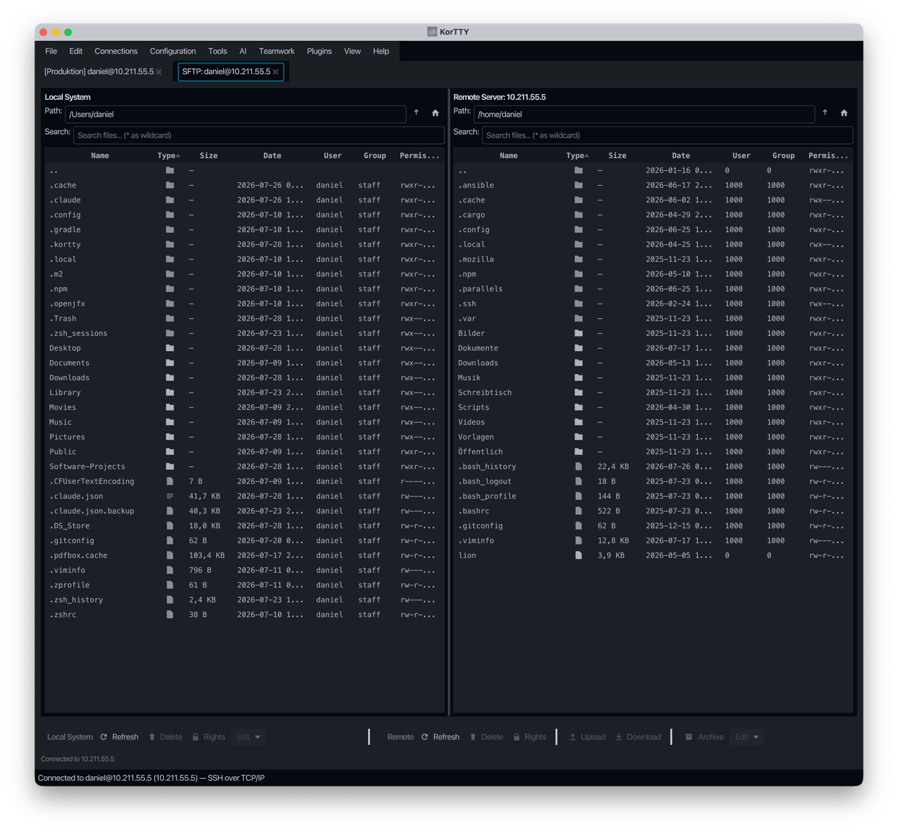

SFTP file manager¶
Der integrierte SFTP-Manager bietet einen grafischen Dateimanager zum Übertragen von Dateien zwischen Ihrem lokalen Computer und Remote-Servern über SFTP. Es verfügt über ein Dual-Panel-Layout, vollständige Unterstützung für Dateivorgänge und eine nahtlose Integration mit dem Snippet-Editor für die Fernbearbeitung von Dateien.
SFTP-Manager öffnen¶
Sie können den SFTP-Manager auf zwei Arten öffnen:
- Menü: Extras > SFTP-Manager öffnen
- Dashboard: Klicken Sie mit der rechten Maustaste auf eine Verbindung > „SFTP-Manager öffnen“"
Wenn die Verbindung einen temporären SSH-Schlüssel verwendet, der abgelaufen ist, werden Sie aufgefordert, einen neuen Schlüssel einzugeben, bevor die Verbindung fortgesetzt werden kann.
Schnittstelle¶
Der SFTP-Manager verwendet ein Zwei-Panel-Layout für eine einfache Dateiverwaltung nebeneinander:
| Left Panel (Local) | Right Panel (Remote) |
|---|---|
| Browse local files | Browse remote files |
| Upload to remote | Download to local |
Sortable columns¶
Both panels display the same columns, all of which are sortable by clicking the column header:
| Column | Description |
|---|---|
| Name | File or directory name |
| Type | Directory (📁) or file (📄) indicator |
| Size | File size in human-readable format (directories show —) |
| Date | Last modified date and time |
| User | Owner name (local: from filesystem; remote: from SFTP or UID) |
| Gruppe | Gruppenname (lokal: vom Dateisystem; remote: von SFTP oder GID) |
| Berechtigungen | Berechtigungen im Unix-Stil (z. B. rwxr-xr-x) |
Standardsortierreihenfolge¶
Standardmäßig werden Dateien in der folgenden Reihenfolge nach der Spalte Typ sortiert:
- Übergeordnetes Verzeichnis (
..) – immer oben - Verzeichnisse, die mit „.“ beginnen (z. B.
.git,.config) – alphabetisch - Andere Verzeichnisse – alphabetisch
- Dateien, die mit „.“ beginnen (z. B.
.bashrc) – alphabetisch - Alle anderen Dateien – alphabetisch
Klicken Sie auf eine beliebige Spaltenüberschrift, um nach dieser Spalte zu sortieren. Durch erneutes Klicken auf die Spalte „Typ“ wird zwischen aufsteigender und absteigender Reihenfolge umgeschaltet.
File operations¶
The SFTP Manager supports a full range of file operations:
| Betrieb | Wie |
|---|---|
| Hochladen | Lokale Datei(en) auswählen, auf Hochladen klicken (oder per Drag-and-Drop) |
| Herunterladen | Wählen Sie die Remote-Datei(en) aus und klicken Sie auf „Herunterladen“. |
| Löschen | Datei(en) auswählen, auf Löschen klicken |
| Umbenennen | Wählen Sie eine Datei aus und klicken Sie auf „Umbenennen“ |
| Kopieren | Dateien innerhalb desselben Panels kopieren |
| Im Snippet-Editor bearbeiten | Wählen Sie genau eine lokale oder Remote-Datei aus und verwenden Sie dann das Symbolleistenmenü Bearbeiten oder das Kontextmenü mit der rechten Maustaste |
| Verzeichnis erstellen | Klicken Sie in einem der beiden Fenster auf „Neuer Ordner“ |
| ZIP erstellen | Wählen Sie mehrere Dateien/Verzeichnisse aus und klicken Sie auf „ZIP erstellen“ |
| Eigentümer/Berechtigungen festlegen | Datei(en) auswählen, Kontextmenü oder Schaltfläche verwenden. Separate Felder für Benutzer-, Gruppen- und Oktalberechtigungen (z. B. 755) |
Bearbeiten von Dateien mit dem Snippet-Editor¶
Die Aktion Im Snippet-Editor bearbeiten ist nur für eine einzelne ausgewählte Datei aktiviert. Es ist deaktiviert für:
- Ordner
- Der Eintrag im übergeordneten Verzeichnis (
..) - Mehrfachauswahl
Lokale Dateien werden direkt aus dem lokalen Dateisystem gelesen; Remote-Dateien werden über die aktive SFTP-Sitzung in den Editor heruntergeladen.
Wenn die Datei im Snippet-Editor geöffnet wird, bleibt die vollständige Symbolleiste verfügbar, einschließlich:
- Formatierung und Syntaxprüfung
- Editor-Profile und Styling
- Zeilennummern und Zeilenumbruch
- Konfigurierte KI-Aktionen
Die Dateimodus-Schaltflächen bieten folgende Speicheroptionen:
- Datei überschreiben – schreibt den aktuellen Editorinhalt zurück in die ursprüngliche lokale oder Remote-Datei
- Speichern unter... – schreibt eine neue lokale Datei über eine Dateiauswahl oder fordert für Remote-Dateien zur Eingabe eines neuen Dateinamens im selben Remote-Verzeichnis auf
- Als Snippet speichern – speichert den aktuellen Inhalt als neues Snippet Manager-Snippet, ohne die Quelldatei als gespeichert zu markieren

Suche¶
Beide Panels unterstützen die Glob-Mustersuche mit dem Platzhalter *. Zum Beispiel:
*.logfindet alle Protokolldateien im aktuellen Verzeichnis*.{py,sh}findet Python- und Shell-Dateien (wenn Ihre Shell die Klammererweiterung unterstützt)backup*findet alle Dateien, die mit „backup“ beginnen"
Geben Sie das Muster in das Suchfeld ein, um angezeigte Dateien schnell zu filtern, ohne das aktuelle Verzeichnis zu verlassen.